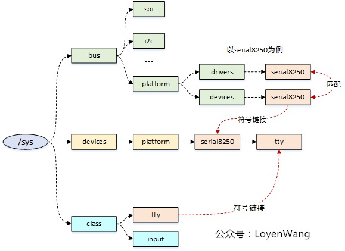
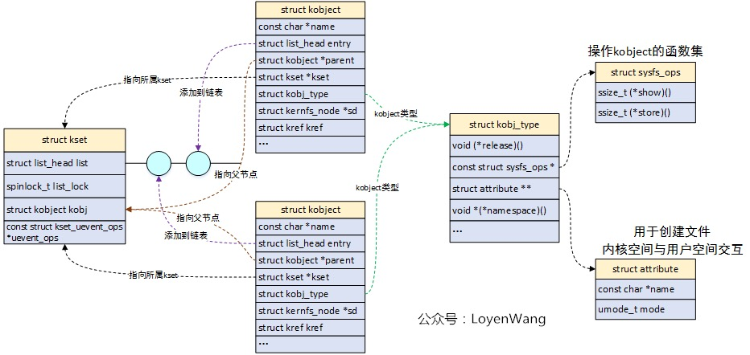
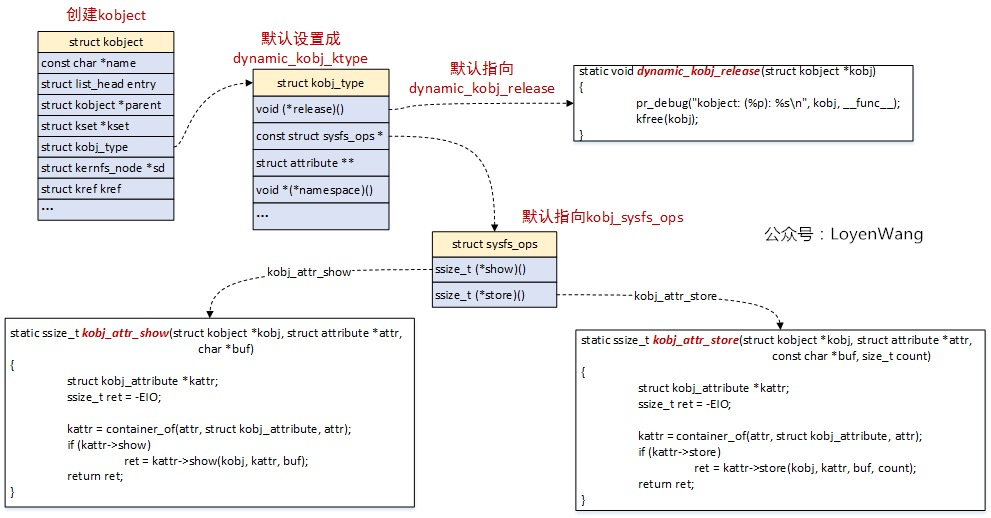
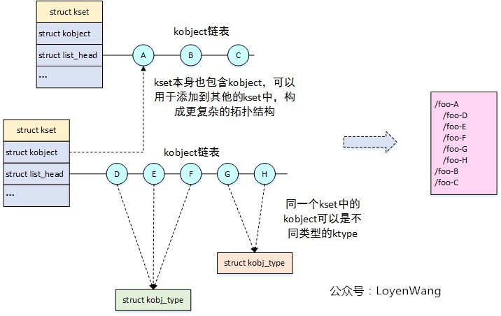
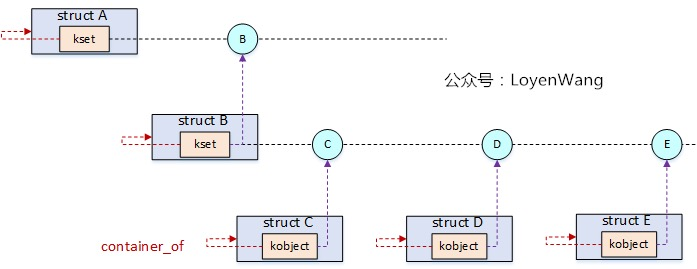
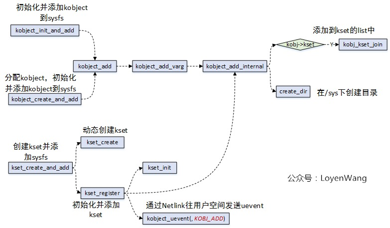
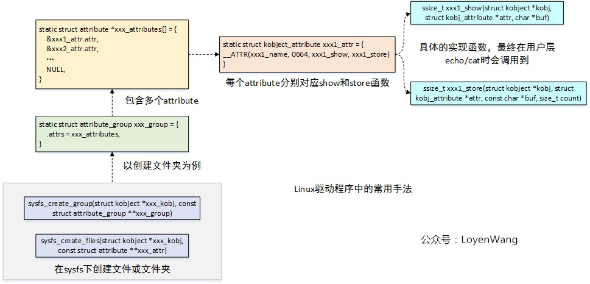
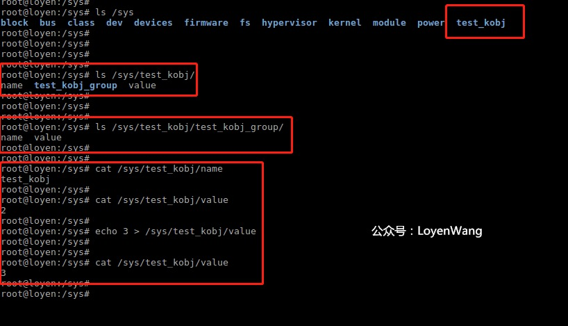

概述
-
接触
kobject/kset/ktype和sys文件系统有一段时间了, 本文进行一个梳理和总结 -
Linux 设备模型的基石是
kset/kobject/kobj_type - 辅助对象包含
struct sys_ops及其包含的show和shtore函数,struct attribute、 - 通讯机制
struct kset_uevent_ops
一 架构图和一些总体规则
- sys 文件系统的架构图

sysfs 文件系统提供了一种用户与内核数据结构进行交互的方式，可以通过mount -t sysfs sysfs /sys来进行挂载；-
- Linux 设备模型中，设备、驱动、总线组织成拓扑结构，通过
sysfs 文件系统以目录结构进行展示与管理；
- Linux 设备模型中，设备、驱动、总线组织成拓扑结构，通过
-
Linux 设备模型中，总线负责设备和驱动的匹配，设备与驱动都挂在某一个总线上，当它们进行注册时由总线负责去完成匹配，进而回调驱动的
probe 函数； -
- 这里的设备和驱动具体实现都是内核模块,
XXXX_device.ko和XXXX_driver.ko.
- 这里的设备和驱动具体实现都是内核模块,
-
SoC 系统中有 spi, i2c, pci 等实体总线用于外设的连接，而针对集成在 SoC 内部的外设控制器，Linux 内核提供一种虚拟总线 platform 用于这些外设控制器的连接，此外 platform 总线也可用于没有实体总线的外设；
-
在/sys 目录下，bus 用于存放各类总线，其中总线中会存放挂载在该总线上的驱动和设备，比如 serial8250，devices 存放了系统中的设备信息，class 是针对不同的设备进行分类；
上边这些功能的实现，离不开 kobject/kset/ktype 机制的支撑，开始旅程吧。
二 数据结构详解和数据结构之间的关系

2.1 kobject
kobject代表内核对象，结构体本身不单独使用，而是嵌套在其他高层结构中，用于组织成拓扑关系；sysfs文件系统中一个目录对应一个kobject；目录下的一个文件对应一个attribute
看看结构体吧：
struct kobject {
const char *name; /* 名字，对应sysfs下的一个目录 */
struct list_head entry; /* kobject中插入的 list_head结构，用于构造双向链表 */
struct kobject *parent; /* 指向当前kobject父对象的指针，体现在sys中就是包含当前kobject对象的目录对象 */
struct kset *kset; /* 当前kobject对象所属的集合 */
struct kobj_type *ktype; /* 当前kobject对象的类型 */
struct kernfs_node *sd; /* VFS文件系统的目录项，是设备和文件之间的桥梁，sysfs中的符号链接是通过kernfs_node内的联合体实现的 */
struct kref kref; /* kobject的引用计数，当计数为0时，回调之前注册的release方法释放该对象 */
#ifdef CONFIG_DEBUG_KOBJECT_RELEASE
struct delayed_work release;
#endif
unsigned int state_initialized:1; /* 初始化标志位，初始化时被置位 */
unsigned int state_in_sysfs:1; /* kobject在sysfs中的状态，在目录中创建则为1，否则为0 */
unsigned int state_add_uevent_sent:1; /* 添加设备的uevent事件是否发送标志，添加设备时向用户空间发送uevent事件，请求新增设备 */
unsigned int state_remove_uevent_sent:1; /* 删除设备的uevent事件是否发送标志，删除设备时向用户空间发送uevent事件，请求卸载设备 */
unsigned int uevent_suppress:1; /* 是否忽略上报（不上报uevent） */
};
2.2 kset
-
kset是包含多个kobject的集合； -
如果需要在
sysfs的目录中包含多个子目录，那需要将它定义成一个kset； -
kset结构体中包含struct kobject字段，可以使用该字段链接到更上一层的结构，用于构建更复杂的拓扑结构； -
sysfs中的设备组织结构很大程度上根据kset组织的，/sys/bus目录就是一个kset对象，在 Linux 设备模型中，注册设备或驱动时就将kobject添加到对应的kset中；
struct kset {
struct list_head list; /* 包含在kset内的所有kobject构成一个双向链表 */
spinlock_t list_lock;
struct kobject kobj; /* 归属于该kset的所有的kobject的共有parent */
const struct kset_uevent_ops *uevent_ops; /* kset的uevent操作函数集，当kset中的kobject有状态变化时，会回调这个函数集，以便kset添加新的环境变量或过滤某些uevent，如果一个kobject不属于任何kset时，是不允许发送uevent的 */
} __randomize_layout;
2.2 扩展(/sys/bus)源码
- 向系统添加一条 bus_type 总线时，改总线会自动添加到/sys/bus 目录下，bus 目录是系统自动创建的，这个 bus 目录为
static struct kset *bus_kset，定义在drivers/base/bus.c中。创建过程如下所示：
static struct kset *bus_kset;
-
/sys/bus 目录的建立过程：drivers/base/bus.c
-
- -->buses_init
-
-
- -->kset_create_and_add //这行代码建立/sys 下面的 bus 目录，其中 bus_kset 就代表 bus 目录
-
int __init buses_init(void)
{
bus_kset = kset_create_and_add("bus", &bus_uevent_ops, NULL); // 第一个参数是bus目录，第二个参数是对应kset_uevent_ops结构, 第三个参数是父kobject
if (!bus_kset)
return -ENOMEM;
system_kset = kset_create_and_add("system", NULL, &devices_kset->kobj);
if (!system_kset)
return -ENOMEM;
return 0;
}
/**
* kset_create_and_add - 创建一个动态的kset 结构并添加到sysfs中
*
* @name: kset名称
* @uevent_ops: kset的kset_uevent_ops 结构
* @parent_kobj: kset的付kobject，如果有的话
*
* 该方法创建一个动态的kset结构，并注册到sysfs上。用完该结构之后
* 调用kset_unregister() ，该结构将会被动态的释放，之后该结构将不再
* 被使用。
*
* 当无法创建kset，将返回NULL
*/
2.3 kobj_type
-
kobj_type用于表征kobject的类型，指定了删除kobject时要调用的函数，kobject结构体中有struct kref字段用于对kobject进行引用计数，当计数值为 0 时，就会调用kobj_type中的release函数对kobject进行释放，这个就有点类似于C++中的智能指针了； -
kobj_type指定了通过sysfs显示或修改有关kobject的信息时要处理的操作，实际是调用show/store函数； -
kobject和kobj_type是 1 对 1 关系
struct kobj_type {
void (*release)(struct kobject *kobj); /* 释放kobject对象的接口，有点类似面向对象中的析构 */
const struct sysfs_ops *sysfs_ops; /* 操作kobject的方法集 */
struct attribute **default_attrs;
const struct kobj_ns_type_operations *(*child_ns_type)(struct kobject *kobj);
const void *(*namespace)(struct kobject *kobj);
};
2.4 kobject 操作函数集, sys_ops
struct sysfs_ops { /* kobject操作函数集 */
ssize_t (*show)(struct kobject *, struct attribute *, char *);
ssize_t (*store)(struct kobject *, struct attribute *, const char *, size_t);
};
2.5 kobject 的属性 struct attribute
/* 所谓的attribute就是内核空间和用户空间进行信息交互的一种方法，例如某个driver定义了一个变量，却希望用户空间程序可以修改该变量，以控制driver的行为，那么可以将该变量以sysfs attribute的形式开放出来 */
struct attribute {
const char *name;
umode_t mode;
#ifdef CONFIG_DEBUG_LOCK_ALLOC
bool ignore_lockdep:1;
struct lock_class_key *key;
struct lock_class_key skey;
#endif
};
kobject对应sys文件系统下的一个目录, 而attribute就对应目录下的一个文件, 方便用户空间对属性进行修改
2.6 更详细的架构图
- 可以看一下
kobject创建的时候，与ktype的关系，这样理解起来更顺：

-
kobject在创建的时候，默认设置kobj_type的值为dynamic_kobj_ktype，通常kobject会嵌入在其他结构中来使用，因此它的初始化跟特定的结构相关，典型的比如struct device和struct device_driver； -
在
/sys文件系统中，通过echo/cat的操作，最终会调用到show/store函数，而这两个函数的具体实现可以放置到驱动程序中；
2.7 结构关系
为了更形象的说明这几个结构体的关系，再来一张图：

-
kset既是kobject的集合，本身又是一个kobject，进而可以添加到其他的集合中，从而就可以构建成复杂的拓扑结构，满足/sys文件夹下的文件组织需求；
-
如果只看
kset/kobject的数据结构组织，可能还是会迷惑，它怎么跟 Linux 的设备模型相关？这时就不得不提到 Linux 内核中一个很精妙的存在container_of，它可以通过成员变量的地址来获取所在结构的地址信息。前文提到过kobject/kset结构本身不会单独使用，通常都是会嵌套在其他结构中，既然kobjcet/kset能组织成拓扑结构，那么包含它们的结构同样可以构建这个关系，因为可以通过container_of就可以找到结构体的首地址。

-
结构体 A、B、C、D、E 同样可以构建拓扑结构关系；
-
struct device和struct device_driver结构体中都包含了struct kobject，而struct bus_type结构体中包含了struct kset结构，这个也就对应到前文提到的设备和驱动都添加到总线上，由总线来负责匹配；
三 流程分析
kobject/kset的相关代码比较简单，毕竟它只是作为一个结构体嵌入其他 high-level 的结构中，充当纽带的作用。不过，我还是简单的上一张图吧：

- 完成的工作基本就是分配结构体，初始化各个结构体字段，构建拓扑关系（主要是添加到
kset的list中，parent的指向等）等，看懂了结构体的组织，这部分的代码理解起来就很轻松了；
四 一个使用 kobject/kset/ktype 的例子（Linux 驱动的常用手法)

4.1 代码
#include <linux/kernel.h>
#include <linux/module.h>
#include <linux/slab.h>
#include <linux/kobject.h>
//自定义一个结构，包含了struct kobject子结构
struct test_kobj {
int value;
struct kobject kobj;
};
//自定义个属性结构体，包含了struct attribute结构
struct test_kobj_attribute {
struct attribute attr;
ssize_t (*show)(struct test_kobj *obj, struct test_kobj_attribute *attr, char *buf);
ssize_t (*store)(struct test_kobj *obj, struct test_kobj_attribute *attr, const char *buf, size_t count);
};
//声明一个全局结构用于测试
struct test_kobj *obj;
//用于初始化sysfs_ops中的函数指针
static ssize_t test_kobj_attr_show(struct kobject *kobj, struct attribute *attr, char *buf)
{
struct test_kobj_attribute *test_kobj_attr;
ssize_t ret = -EIO;
test_kobj_attr = container_of(attr, struct test_kobj_attribute, attr);
//回调到具体的实现函数
if (test_kobj_attr->show)
ret = test_kobj_attr->show(container_of(kobj, struct test_kobj, kobj), test_kobj_attr, buf);
return ret;
}
//用于初始化sysfs_ops中的函数指针
static ssize_t test_kobj_attr_store(struct kobject *kobj, struct attribute *attr, const char *buf, size_t count)
{
struct test_kobj_attribute *test_kobj_attr;
ssize_t ret = -EIO;
test_kobj_attr = container_of(attr, struct test_kobj_attribute, attr);
//回调到具体的实现函数
if (test_kobj_attr->store)
ret = test_kobj_attr->store(container_of(kobj, struct test_kobj, kobj), test_kobj_attr, buf, count);
return ret;
}
//用于初始化kobj_ktype
const struct sysfs_ops test_kobj_sysfs_ops = {
.show = test_kobj_attr_show,
.store = test_kobj_attr_store,
};
//用于初始化kobj_ktype，最终用于释放kobject
void obj_release(struct kobject *kobj)
{
struct test_kobj *obj = container_of(kobj, struct test_kobj, kobj);
printk(KERN_INFO "test kobject release %s\n", kobject_name(&obj->kobj));
kfree(obj);
}
//定义kobj_ktype，用于指定kobject的类型，初始化的时候使用
static struct kobj_type test_kobj_ktype = {
.release = obj_release,
.sysfs_ops = &test_kobj_sysfs_ops,
};
//show函数的具体实现
ssize_t name_show(struct test_kobj *obj, struct test_kobj_attribute *attr, char *buffer)
{
return sprintf(buffer, "%s\n", kobject_name(&obj->kobj));
}
//show函数的具体实现
ssize_t value_show(struct test_kobj *obj, struct test_kobj_attribute *attr, char *buffer)
{
return sprintf(buffer, "%d\n", obj->value);
}
//store函数的具体实现
ssize_t value_store(struct test_kobj *obj, struct test_kobj_attribute *attr, const char *buffer, size_t size)
{
sscanf(buffer, "%d", &obj->value);
return size;
}
//定义属性，最终注册进sysfs系统
struct test_kobj_attribute name_attribute = __ATTR(name, 0664, name_show, NULL);
struct test_kobj_attribute value_attribute = __ATTR(value, 0664, value_show, value_store); //使用__ATTR宏,定义一个属性(对应sysfs下的一个文件)、权限、读函数、写函数
struct attribute *test_kobj_attrs[] = {
&name_attribute.attr,
&value_attribute.attr,
NULL,
};
//定义组. 我们知道每个kobject对应/sys目录下的一个子目录, 该子目录下的目录可以继续是kobject(如果是kobject那必然是一个子目录), 也可以是单纯的子目录(没有kobject与之对应), 那么就可以采用attribute_group来实现
struct attribute_group test_kobj_group = {
.name = "test_kobj_group",
.attrs = test_kobj_attrs,
};
//模块初始化函数
static int __init test_kobj_init(void)
{
int retval;
printk(KERN_INFO "test_kobj_init\n");
printk("%s %s line %d test_kobj_init\n", __FILE__, __FUNCTION__, __LINE__);
obj = kmalloc(sizeof(struct test_kobj), GFP_KERNEL);
if (!obj) {
return -ENOMEM;
}
obj->value = 1;
memset(&obj->kobj, 0, sizeof(struct kobject));
//添加进sysfs系统
kobject_init_and_add(&obj->kobj, &test_kobj_ktype, NULL, "test_kobj");
//在sys文件夹下创建文件
retval = sysfs_create_files(&obj->kobj, (const struct attribute **)test_kobj_attrs);
if (retval) {
kobject_put(&obj->kobj);
return retval;
}
//在sys文件夹下创建group
retval = sysfs_create_group(&obj->kobj, &test_kobj_group);
if (retval) {
kobject_put(&obj->kobj);
return retval;
}
return 0;
}
//模块清理函数
static void __exit test_kobj_exit(void)
{
printk(KERN_INFO "test_kobj_exit\n");
printk("%s %s line %d test_kobj_exit\n", __FILE__, __FUNCTION__, __LINE__);
kobject_del(&obj->kobj);
kobject_put(&obj->kobj);
return;
}
module_init(test_kobj_init);
module_exit(test_kobj_exit);
MODULE_AUTHOR("LoyenWang");
MODULE_LICENSE("GPL");
4.2 Makefile
ifneq ($(KERNELRELEASE),)
obj-m:=test_kobject.o
else
KERDIR := /lib/modules/$(shell uname -r)/build
PWD:=$(shell pwd)
all:
make -C $(KERDIR) M=$(PWD) modules
clean:
rm -f *.ko *.o *.symvers *.cmd *.cmd.o modules.* *.mod.c
endif
Makefile没有太多好说的，注意Tab的使用，否则容易出错；
4.3 测试结果

-
在
/sys目录下创建了test_kobj文件夹，在该文件夹下除了name和value外，还有一个test_kobj_group的子文件夹； -
可以通过
cat/echo的操作，来操作name和value，分别会调用到底层的xxx_show和xxx_store函数； - 对着代码看这个图，一目了然；
4.4 更多例子
-
- sysfs 可以将设备属性直接展示给用户空间,可以在控制台和 shell 脚本上直接和用户空间进行交互, 而 ioctl 需要编写个 c 程序才能运行。因此在这方面 sysfs 更合适。